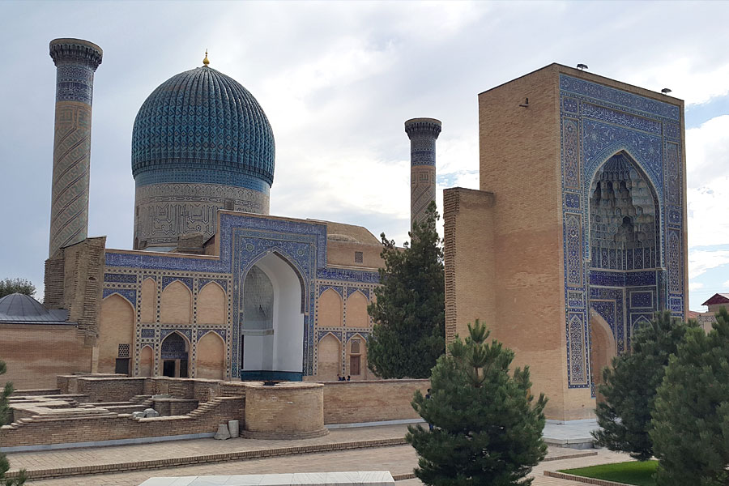

Tours, Attractions and Things To Do in Samarkand
Samarkand Travel Guide
1. History2. Landmarks and attractions
3. Entertainment, parks, and shopping
Samarkand, a renowned historical city in Uzbekistan, was once a vital stop along the Great Silk Road. As the
capital of Amir Timur (Tamerlane)'s empire, it flourished under the guidance of his grandson, Ulugh Beg
(Mirzo
Ulugbek), who transformed the city into a hub for scientific and cultural advancements in the East. The
city's
well-preserved medieval architectural monuments have earned it a place on the UNESCO World Heritage List.
Now a vibrant blend of ancient Eastern traditions and modernity, Samarkand stands as the third-largest city
in
Uzbekistan, with a population exceeding half a million. Each year, it welcomes thousands of visitors from
around
the globe who come to experience its rich history and unique charm.
Samarkand Tours
Samarkand tours offer an exciting exploration into the heart of Central Asia's rich history, showcasing the
city's stunning architectural marvels from the era of the Silk Road. With captivating narratives of the
past,
these tours provide an unforgettable journey through the Registan Square, the Shah-i-Zinda necropolis, and
the
awe-inspiring Bibi-Khanym Mosque.
Before embarking on your journey, consider delving deeper into Samarkand's vibrant history and culture to
truly
appreciate its grandeur.
History of Samarkand

Founded in the 8th century BC, the city of Samarkand was once the capital of the ancient state of Sogdiana, asF mentioned in the Zoroastrian book "Avesta." Both Romans and Greeks referred to the city as Marakanda, which was later conquered by Alexander the Great in 329 BC.
Founded in the 8th century BC, the city of Samarkand was once the capital of the ancient state of Sogdiana, as mentioned in the Zoroastrian book "Avesta." Both Romans and Greeks referred to the city as Marakanda, which was later conquered by Alexander the Great in 329 BC.
In 1868, Russian forces conquered Samarkand, and following the 1917 revolution, it became part of the Turkestan ASSR. The city served as the capital of Uzbekistan from 1925 to 1939.
What to Do in Samarkand
Landmarks and Attractions in Samarkand
Samarkand is a city brimming with attractions, with many captivating sites dedicated to its medieval history.
The Registan, Samarkand's most iconic square, showcases three 15th-17th century madrassahs that together form a stunning architectural enfsemble. The square features the central Ulugbek Madrasah, built in 1420, flanked by the Sherdor Madrasah (1636) and Tillya-Kari Madrasah (1660). These madrassahs once served as spiritual educational institutions for those seeking to study Islam. Each madrasah features cells (living quarters), a mosque, and an inner courtyard. Well-preserved to this day, the entire complex is recognized as a UNESCO World Heritage Site.f
Majestic Gur-Emir Mausoleum houses the remains of Tamerlane (Amir Timur), a leader renowned for his conquests and the establishment of a powerful state. Under his rule, Samarkand became the capital and experienced significant cultural, architectural, and economic growth. Timur initially built the tomb in 1404 for his grandson, but after his unexpected death in 1405, he was laid to rest there himself, despite his original intention to be buried in his hometown of Kesh (modern-day Shakhrisabz). The mausoleum also serves as the final resting place for Timur's sons, Shahrukh and Miran Shah, grandsons Ulugbek and Muhammad Sultan, his teacher Mir Said Baraka, and several other members of the Timurid dynasty.
Majestic Gur-Emir Mausoleum houses the remains of Tamerlane (Amir Timur), a leader renowned for his conquests and the establishment of a powerful state. Under his rule, Samarkand became the capital and experienced significant cultural, architectural, and economic growth. Timur initially built the tomb in 1404 for his grandson, but after his unexpected death in 1405, he was laid to rest there himself, despite his original intention to be buried in his hometown of Kesh (modern-day Shakhrisabz). The mausoleum also serves as the final resting place for Timur's sons, Shahrukh and Miran Shah, grandsons Ulugbek and Muhammad Sultan, his teacher Mir Said Baraka, and several other members of the Timurid dynasty.

Bibi-Khanum Mosque, situated near Siab Bazaar, was constructed in 1404 in honor of Amir Timur's beloved wife. It is said that the ruler personally oversaw the building process. Within the mosque's courtyard stands a large stone platform for the Quran, the holy book of Islam. Legend has it that if a childless woman crawls under the stand, she may become pregnant.
Shahi Zinda is a distinctive medieval necropolis adorned in blue hues. Along a narrow, elongated street lie the mausoleums of prominent Samarkand residents from the 11th to 15th centuries. To reach the necropolis, visitors must ascend a flight of stairs. It is believed that those who count the same number of steps going up and coming down are fortunate individuals whose wishes will come true.
Ulugbek Observatory, discovered during archaeological excavations in 1908, is the remnant of a three-story, cylindrical observatory dating back to 1420. Excavations unearthed a unique measuring instrument, a sextant, which was used to determine the altitude of the sun and stars. The observatory was led by Ulugbek, Amir Timur's grandson. Today, the foundation and the layout of the observatory's rooms have been reconstructed.
Saint Daniel's Tomb (Mausoleum of Khoja Daniyar) is a remarkable site frequented by followers of Islam, Orthodoxy, and Judaism. According to legend, the biblical prophet Daniel (Daniyar) is buried here, while a more plausible version suggests the tomb belongs to Khoja Daniyar, an associate of Prophet Muhammad's cousin. Regardless, hundreds of pilgrims from the three faiths visit daily. A holy spring flows near the grave, and many claim to have experienced healing after drinking its water. Additionally, a pistachio tree stands at the mausoleum's entrance. Although it had been dry for almost half a century, it bloomed after Patriarch Alexy II's visit in 1996 and continues to flower annually.
Afrosiab, a site within modern Samarkand, was first mentioned in written records in the 8th century BC. Archaeological excavations conducted in the late 19th century unearthed numerous artifacts dating back to the 8th century BC, as well as later findings that shed light on Samarkand's medieval history. For instance, the ruins of a 9th-century Samanid palace were discovered here, though they have not survived to the present day. All ancient artifacts found during the excavations are now housed in a museum bearing the same name.
Rukhabad Mausoleum, situated near Gur-Emir, was constructed by Tamerlane in 1390. It is the final resting place of Burhaneddin Sagarji Sheikh, and the site is considered sacred. Tamerlane himself would always dismount from his horse when passing by.
Hazrat Khizr Mosque was reconstructed in the 19th century, replacing the one destroyed in the 13th century. The original mosque on this site dates back to the 8th century. Thanks to preserved drawings found in archives, the modern mosque faithfully replicates the original structure. In 2016, Islam Karimov, the first president of Uzbekistan and a Samarkand native, was buried on the mosque's grounds.
Built in 1911, the Cathedral of St. Alexis of Moscow in Samarkand is the second-largest Orthodox church in Uzbekistan, surpassed only by the Tashkent Cathedral. The cathedral closed in the 1920s but was returned to the faithful 70 years later. In 1996, His Holiness Alexis II, Patriarch of Moscow and All Russia, consecrated the cathedral.
Holy Protection Cathedral in Samarkand is the city's oldest functioning church, built in 1903 and originally named the Church of the Ascension. Constructed in the classical traditions of Russian church-building, it features a cross-dome design. In the 1970s, the church received cathedral status, although services were not held there. The building was returned to the faithful in the 1990s.
At the Samarkand-Bukhara Silk Carpets Factory (also referred to as Hudjum), you'll discover the age-old traditions of carpet weaving, learn how threads are dyed with natural colors, and explore the creation of unique patterns. You'll also have the opportunity to participate in crafting a handmade rug.
Be sure to visit the Meros Paper Factory too. Here, you'll learn about paper-making and witness the entire production process. The paper is crafted using ancient techniques.
Samarkand Museums

Samarkand is an ancient city filled with fascinating museums.
The State Museum of History and Culture of Uzbekistan has been operating in Samarkand since 1896. It houses historical, archaeological, ethnographic, numismatic, and bonistic collections, as well as an array of paintings, engravings, and sculptures.
Founded in 1970, the Afrosiab Museum offers insights into the history of Samarkand and neighboring settlements. Located near the ancient site of the same name, considered one of the world's most significant archaeological monuments, the museum displays ancient artifacts, remnants of frescoes from a 7th-8th century Samarkand palace, and much more.
Ulugbek Observatory Museum (Memorial Museum of Mirzo Ulugbek) chronicles the development of science in Central Asia. During the era of Mirzo Ulugbek, numerous astronomers worked here, making discoveries that continue to be utilized worldwide today.
At the Samarkand Regional Museum of Local Lore, you'll find numerous old photographs and documents related to the city, as well as exhibits dating from the 13th to the 17th centuries.
House Museum of Sadriddin Ayni, where the renowned writer lived from 1917 until the early 1950s, offers insights into his life and culture. It was here that he penned his famous works "The Rise of Mukanna," "Yatim," and "Odin." The house displays his personal belongings, photographs, documents, and more.
Samarkand is also home to a winemaking museum, a folklore and ethnographic museum, a zoology museum, and various other museums.